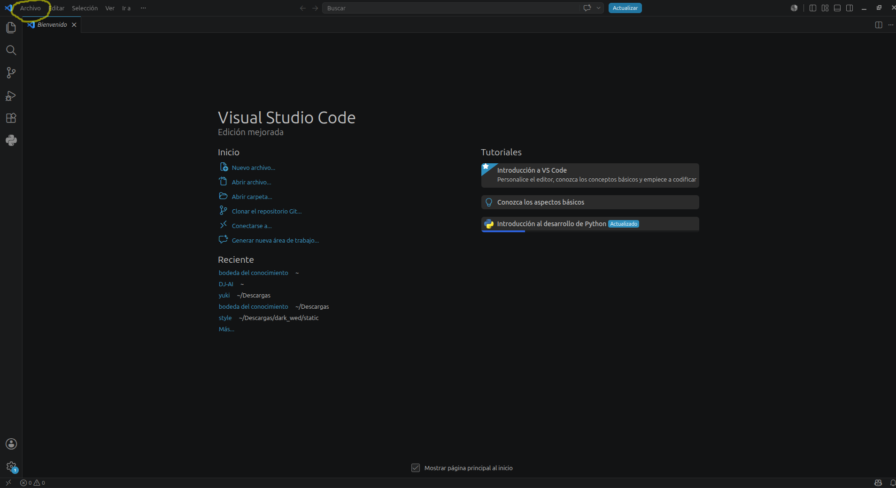
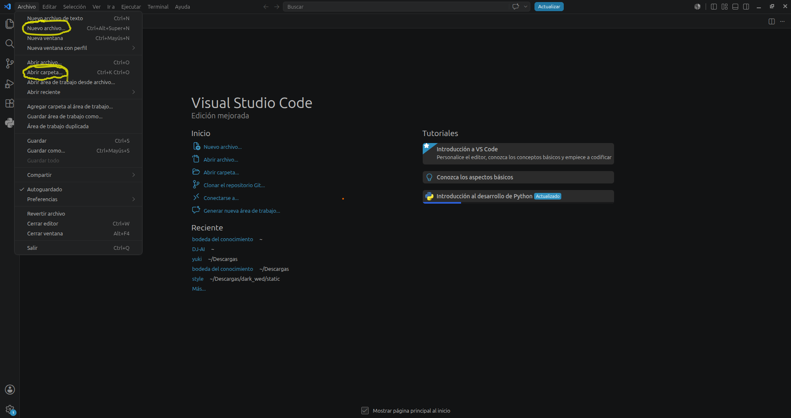
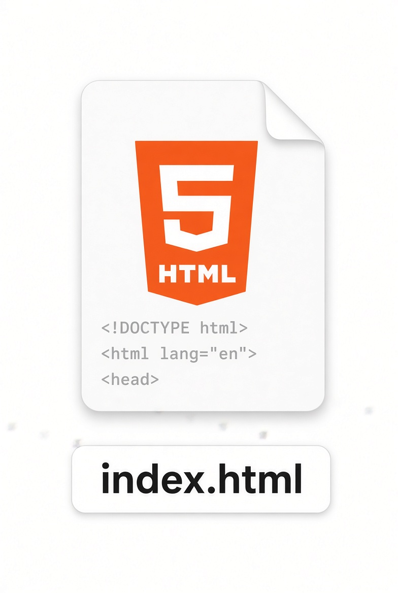
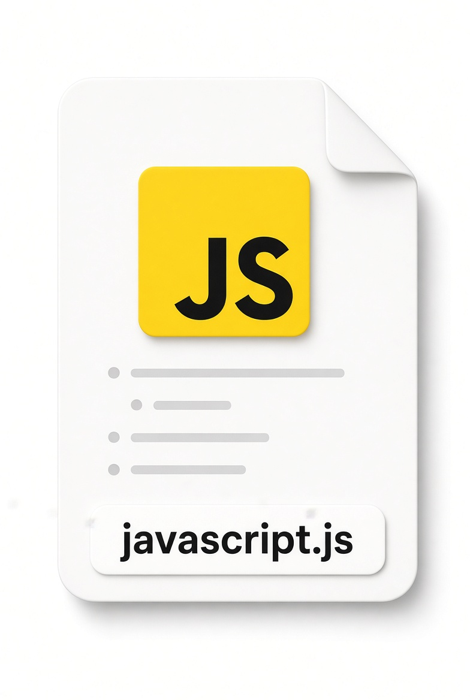
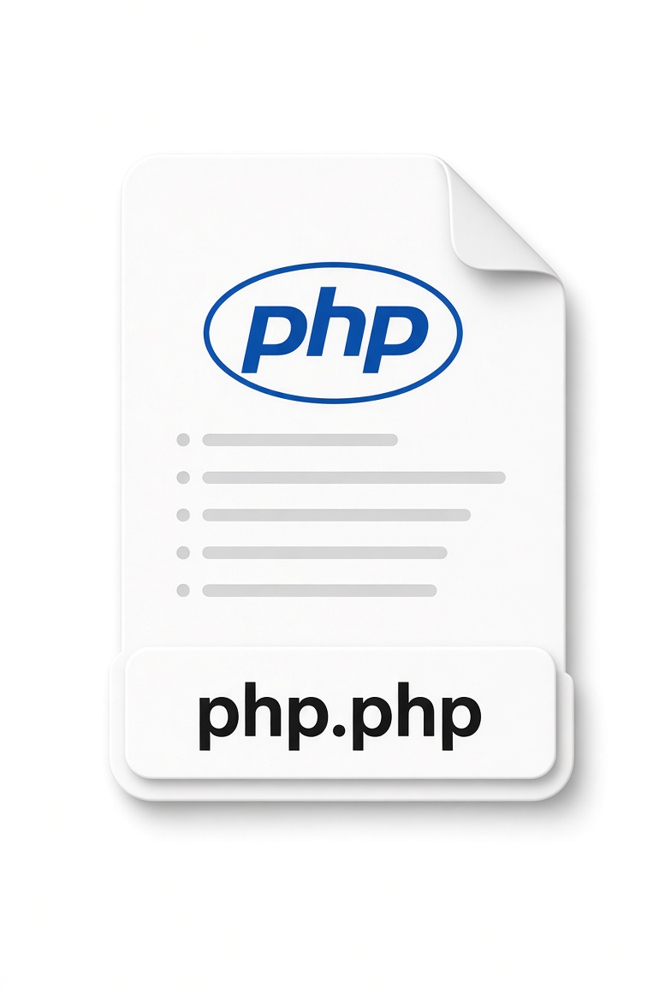
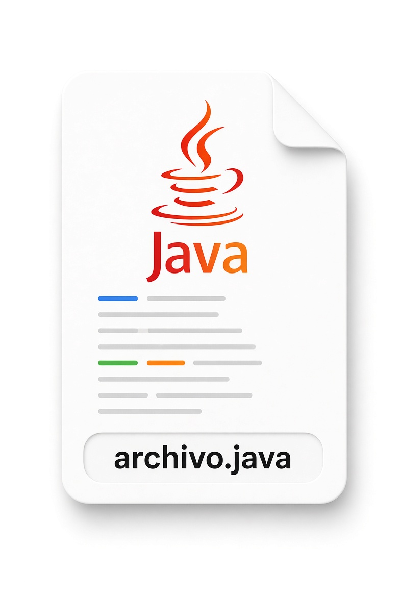
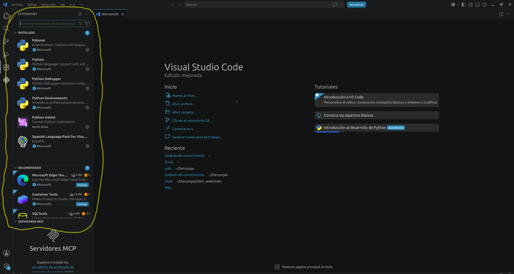

En esta sección se hablará acerca de uno de los editores de código más usados en el mundo de la programación: Visual Studio Code. Este editor nos permite crear archivos y proyectos para cada ejecución respectiva desde su terminal, junto con los lenguajes que se elijan para empezar a codificar. Entre estos están: Python, JavaScript, PHP o Java, cada uno con sus respectivas inicializaciones al final de cada archivo creado. También es importante aclarar que aquí el HTML es la base del maquetado para cada proyecto que se crea. Es así como empezamos este apartado:
Una vez instalado Visual Studio Code, lo abrimos y vamos a la opción que dice "Archivo". Allí encontraremos muchas opciones y nos enfocaremos en dos importantes, dependiendo del caso en el que las necesitemos: "Nuevo archivo" y "Abrir carpeta". Como es nuestra primera vez, le daremos en "Abrir carpeta". Se abrirá el explorador de archivos y nos pedirá seleccionar una carpeta de nuestro directorio. Puede ser cualquiera que haya sido creada antes para el almacenamiento de los archivos. Es así como seleccionamos la de nuestra preferencia y proseguimos al siguiente paso.


Continuando con lo anterior, se debe comenzar con la creación de los archivos respectivos de cada lenguaje con el que se vaya a trabajar.
Como iniciativa, se toma el lenguaje de marcado HTML: al crear un archivo con su tipado, deberá tener el nombre dado al elemento y, por último,
la extensión .html. Por ejemplo: index.html (HTML), python.py (Python), javascript.js (JavaScript),
php.php (PHP), archivo.java (Java), archivo.cpp (C++), entre otros.
Cada lenguaje tendrá su extensión correspondiente al final del nombre de cada archivo.




Por último, se hablará de cómo instalar extensiones en Visual Studio Code. Las extensiones son complementos que nos permiten trabajar con mayor estabilidad. Por ejemplo, visualizar nuestro código y ver al mismo tiempo en el navegador cómo la vista se refresca automáticamente, sin necesidad de hacerlo manualmente. Así funciona uno de estos complementos. Cada extensión cumple una función diferente, como traducir el contenido del editor o corregir palabras mal escritas en el código, además de muchas otras funciones interesantes. Por esta razón, dentro del editor existe un apartado dedicado exclusivamente a las extensiones, en el cual se pueden buscar e instalar fácilmente.

si as leido totalmente esta seccion te felicito aun hay mas conocimiento para poner en parctica las otras secciones no son tan cortas y van mas alla de esto.